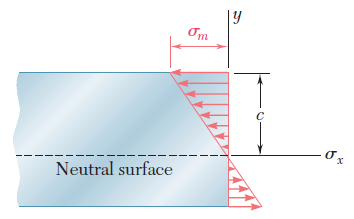
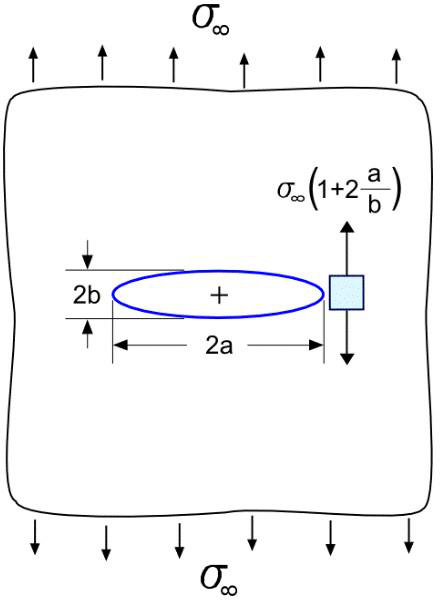
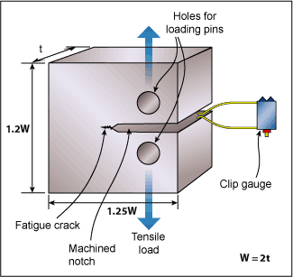
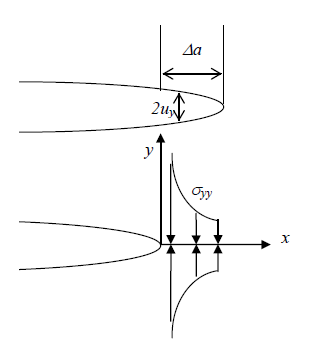
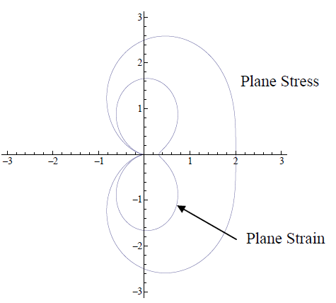
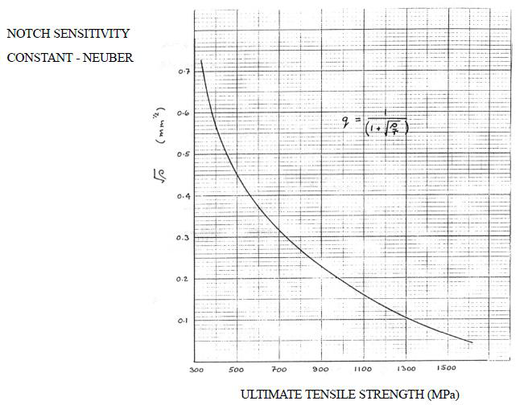

Advanced Machine Design — Study Guide
Drawn directly from your MEPP 436 slide decks and lecture notes, then elaborated with the reference texts where the slides are thin. Core (examinable) content is plain; reference/beyond-slides enrichment is always in a coloured box so you can tell them apart.
Click a topic heading to expand or collapse it. Use the sidebar to jump between topics; each figure is taken from your course slides.
1 Introduction to Mechanical Engineering Design
1.1 The design process & considerations
Design proceeds through recognised stages, iterating as needed:
identification of need → problem definition → synthesis → analysis & optimisation → evaluation → presentation
Typical design considerations juggled by the engineer: functionality, strength/stress, distortion/deflection, wear, corrosion, safety, reliability, manufacturability, cost, weight, life, noise, styling and environmental impact.
1.2 Standards and codes
| Term | Definition | Purpose |
|---|---|---|
| Standard | Specifications for parts, materials or processes | Uniformity, efficiency, a specified quality |
| Code | Specifications for analysis, design, manufacture & construction | A specified degree of safety, efficiency & performance |
Bodies to know: NBSM (Nepal), NBC 105:2020, BIS, AISI, ASME, ASTM, ASHRAE, SAE.
1.3 Design economics
- Using standard sizes is the first principle of cost reduction (cuts tooling & procurement cost).
- Close (tight) tolerances raise cost — extra processing, extra inspection, slower machines.
- Break-even analysis compares two production methods; below the break-even quantity the low-setup method wins, above it the high-rate method wins.
1.4 Design factor & factor of safety common MCQ
- Stress & strength must be the same type, same units, same critical location.
- The design factor n_d is chosen up-front for uncertainty; the factor of safety is the realised margin after rounding to standard sizes.
1.5 Reliability (introductory)
Series system (all must work): R = R₁·R₂·…·Rₙ. Example: two bearings 0.95 & 0.98 → R = 0.931. (Full treatment in §9.)
1.6 Dimensions & tolerances
| Term | Meaning |
|---|---|
| Nominal size | The size used when referring to a part (need not equal the actual dimension) |
| Limits | The stated max & min dimensions |
| Tolerance | The difference between the two limits |
| Bilateral / Unilateral | Variation in both directions / in one direction only |
| Clearance / Interference | Internal member smaller / larger than external member |
| Allowance | Minimum clearance (or maximum interference) of mating parts |
2 Material Properties & Selection
Choosing the material is one of the earliest and most important design decisions — usually made before dimensions are fixed. Properties come from specimen testing (standardised, e.g. ASTM) or, when risk is high, component testing under real service loads.
2.1 The tensile test (ASTM E8) & key properties
A load–elongation curve becomes a stress–strain curve, giving: elastic limit / yield strength, elastic modulus E (Hooke's law), ultimate tensile strength (UTS), ductility (% elongation, % area reduction), tensile toughness, Poisson's ratio ν.
2.2 Other mechanical tests
| Test | Measures | Key fact |
|---|---|---|
| Compression | Behaviour under compressive load | Needed for ceramics, concrete |
| Shear | Shear stress–strain | Shear yield ≈ 0.5–0.75 × tensile yield; G ≈ 0.4E |
| Hardness (Brinell/Rockwell/Vickers) | Resistance to surface penetration | Not fundamental; for steels UTS(MPa) ≈ 3.4 × HB |
| Impact (Izod/Charpy) | Energy absorbed on sudden load | Materials get more brittle at high strain rate |
| Creep | Time-dependent deformation at high T | Governs high-temperature design |
| Fatigue | Strength loss under repeated stress | See §6–§7 |
2.3 Heat treatment (effect on properties)
| Process | Effect |
|---|---|
| Quenching | Very hard/strong martensite; trades ductility for strength |
| Tempering | After quench: lowers strength a little, restores some ductility |
| Annealing | Soft, relaxed state; removes residual stresses |
| Normalizing | Stronger/harder than fully annealed but close to it |
2.4 Material classes
| Class | Strengths | Weaknesses |
|---|---|---|
| Metals & alloys | High strength/stiffness, ductile, tough, good fatigue & wear, conductive | Heavy, can corrode |
| Polymers | Low density → good specific strength, corrosion-resistant, insulating, easily formed | Low strength, poor at high T |
| Ceramics | Excellent compressive strength, high E, hard, wear/corrosion-resistant, high-T stable | Very brittle; tension ≈ 10% of compression; no plasticity |
| Composites | High specific strength/modulus, good fatigue/creep, tailorable | Cost, anisotropy, harder to recycle |
2.5 Material selection charts (Ashby charts)
An Ashby chart plots one property against another (e.g. Young's modulus vs density). Each material class occupies a “bubble.” Overlay a guideline of constant performance (specific stiffness E/ρ = C, or specific strength σ/ρ = C); materials in the top-left/upper region win for light-and-stiff or light-and-strong designs.
- Metals heaviest; foams lightest; ceramics stiffest.
- Light-and-stiff bike frame: polymers too floppy, ceramics too brittle in tension → composites best; Mg/Al/Ti competitive.
3 Stresses, Strains & Failure Theories
3.1 Stress & strain as tensors
Stress = internal resistance per unit area developed against external load; strain = the resulting deformation. At a point, three mutually perpendicular planes fully describe the stress state — the “stress cube.”
- Plane stress: all z-face stresses = 0 (thin plates, pressure-vessel walls, free surfaces). Components σₓₓ, σᵧᵧ, τₓᵧ.
- Plane strain: all z-direction strains = 0 (thick bodies: dams, long shafts).
3.2 Generalized Hooke's law (isotropic, linear elastic)
3.3 Principal stresses, transformation & Mohr's circle
Principal planes carry no shear, only normal stress; those are the principal stresses σ₁ ≥ σ₂ ≥ σ₃.

3.4 Bending & torsion (revision)

3.5 Failure — the five classical theories
| Theory (a.k.a.) | Failure criterion | Best for | Yield surface |
|---|---|---|---|
| Max principal stress (Rankine) | σ₁ ≥ σult (or σᵧ) | Brittle | Square |
| Max shear stress (Tresca) | σ₁ − σ₃ ≥ σᵧ | Ductile (conservative) | Hexagon |
| Max principal strain (St. Venant) | ε₁ ≥ εᵧ | Rarely used | Rhombus |
| Max total strain energy (Haigh) | U ≥ U at yield | — | Ellipse |
| Max distortion energy (Von Mises) | \(\sigma'=\sqrt{\tfrac12[(\sigma_1-\sigma_2)^2+(\sigma_2-\sigma_3)^2+(\sigma_3-\sigma_1)^2]}\ge\sigma_y\) | Ductile (accurate) | Ellipse |

The five yield surfaces individually (course slides, all in \(\sigma_1/\sigma_{yp}\)–\(\sigma_2/\sigma_{yp}\) space — a point inside is safe, on the boundary it yields):

max principal stress · brittle

max shear · ductile (conservative)

max principal strain (\(\nu=0.35\))

max total strain energy (\(\nu=0.35\))

max distortion energy · ductile (accurate)
4 Introduction to Fracture Mechanics
4.1 Why fracture mechanics? (the design shift)
Traditional design compares stress to strength (2 parameters). Fracture mechanics adds a third: flaw size. The design is safe if the combination of stress and largest expected crack keeps K < Kᴵᴄ. It answers: what is the strength as a function of crack size, and what is the maximum tolerable crack size?
Historical driver: the WWII Liberty Ships broke in cold water — welded (continuous) construction, brittle high-sulphur steel and micro-cracks let a crack run through the whole hull.
4.2 Characteristics of a crack
- Connection to free surface — fully internal / internal-connected-to-surface / surface crack.
- Crack length — longer is more dangerous.
- Crack-tip radius — sharper is more dangerous; plasticity blunts tips in ductile metals.
- Crack orientation relative to loading.
4.3 Modes of loading (memorise cold)
4.4 Cohesive stress & why real strength is low
Cohesive stress σᴄ = theoretical stress to break atomic bonds, from the interatomic force–displacement curve (≈ half a sine wave):
Real materials fracture far below σᴄ because flaws concentrate stress. For an elliptical crack (tip radius ρ = b²/a):
A micron crack gives σ_f ≈ 0.01 σᴄ — matching experiment; a “perfect” solid always contains flaws.
5 Linear Elastic Fracture Mechanics (LEFM)
LEFM applies to brittle behaviour — sharp cracks, little tip plasticity. For growth, both criteria hold: the global energy criterion (Griffith) and the local stress criterion (Inglis).
5.1 Inglis (1913) — local, stress-based
Stress concentration at a notch depends on the tip radius. The crack grows when the amplified tip stress reaches the theoretical fracture stress: σmax = σ_A ≥ σ_f.

5.2 Griffith (1920) — global, energy-based
5.3 Stress Intensity Factor K — the central quantity

- a = half-length for a fully internal (central) crack; full length for an edge crack.
- Y = geometry/shape factor. Insight: quadrupling crack length ≡ doubling stress — K captures the combined effect.
| Geometry | Shape factor Y |
|---|---|
| Central crack, infinite plate | 1.0 |
| Single edge crack | 1.12 (12% higher — extra energy at free surface) |
| Embedded penny-shaped crack | 2/π ≈ 0.64 |
| Surface half-penny crack | 0.713 |
5.4 Irwin's fracture criterion & fracture toughness Kᴵᴄ
Fracture occurs in Mode I when Kᵢ ≥ Kᴵᴄ. Kᴵᴄ = fracture toughness (a material property like σᵧ), microstructure-sensitive, measured under plane strain (thick specimen → conservative, lowest value).

| Material | Kᴵᴄ (MPa√m) | Material | Kᴵᴄ (MPa√m) |
|---|---|---|---|
| Cast iron | 33 | Al 2024-T3 | 33 |
| Low-carbon steel | 77 | Al 7075-T6 | 28 |
| Stainless steel | 220 | Ti-6Al-4V | 55 |
5.5 Energy release rate G and the K–G relation
K is local; G is global; for linear elasticity they are uniquely related.
5.6 Crack-tip plasticity & the LEFM limit
LEFM predicts infinite tip stress (the stress singularity); plasticity intervenes:
- Irwin model: plastic-zone size r_y = (1/2π)(Kᵢ/σ_ys)² (plane stress); use effective crack length a + r_y.
- Strip-yield (Dugdale–Barenblatt): a thin plastic strip length ρ at each tip; total crack = 2(a+ρ).


5.7 Summary of fracture criteria
| Criterion (year) | Basis | Condition | Key formula |
|---|---|---|---|
| Inglis (1913) | Local stress, tip radius | σ_A ≥ σ_f | σtip = 2σ√(a/ρ) |
| Griffith (1920) | Global energy | dUₛ/da ≥ dUᵧ/da | σ_f = √(2Eγ/πa) |
| Irwin [K] | Stress intensity | Kᵢ ≥ Kᴵᴄ | Kᵢ = Yσ√(πa) |
| Irwin [G] | Energy release rate | G ≥ Gᴄ | G = K²/E' |
| Wells (1961) — CTOD δ | Crack-tip opening | δ ≥ δᴄ | δ = Kᵢ²/(Eσᵧ) |
| Rice (1968) — J-integral | Generalised energy (elastic-plastic) | J ≥ Jᴄ | HRR fields |
6 Material Fatigue — mechanism & concepts
Fatigue gives no warning (little deflection), is sudden (brittle-like), and is only partly understood, so life is estimated empirically. Infamous cases: 1842 Versailles rail crash (locomotive axle); 1980 Alexander L. Kielland platform (fatigue crack in bracing D-6, 123 deaths).
6.1 The five-stage failure mechanism
- Cyclic plastic deformation → dislocations pile at the surface, forming persistent slip bands.
- Micro-crack initiation along slip bands, grain boundaries, inclusions.
- Micro-crack coalescence into a macro-crack.
- Macro-crack propagation — governed by ΔK (LEFM); plotted as da/dN vs ΔK.
- Final failure — remaining section can't carry the load; rapid fracture.
Governing parameters across the process: K_t (stress-concentration) → K_I (stress-intensity) → K_IC (fracture toughness).
6.2 Fatigue loading parameters
| Type | R | Description |
|---|---|---|
| Fully reversed | −1 | σ_m = 0 (rotating-bending) |
| Repeated | 0 | σmin = 0 |
| Fluctuating | 0 < R < 1 | General tension–tension |
6.3 HCF vs LCF — a guaranteed question
| High-Cycle Fatigue (HCF) | Low-Cycle Fatigue (LCF) | |
|---|---|---|
| Cycles to failure | > 10³ (often 10⁴–10⁵) | < 10³ |
| Stress level | Low (below yield) | High (local yielding) |
| Dominant strain | Mostly elastic | Plastic strain dominates |
| Best analysis | Stress-life (S-N) | Strain-life (ε-N) |
| Typical source | High-frequency loading (valve springs) | Start-up/shut-down thermal cycles |
6.4 Factors affecting fatigue
Cyclic load state (amplitude, mean, sequence, biaxiality) · geometry/stress concentration · surface quality · residual stress (compressive helps, tensile hurts) · microstructure (finer grains → longer life) · temperature · environment (corrosion fatigue).

6.5 Fatigue testing & the S-N curve
Rotating-beam (R.R. Moore) test: the specimen rotates under bending so each point cycles tension↔compression; max stress ≈ 5.09 FL/d³. Data plotted as stress S vs cycles N (usually log N).
- Endurance/fatigue limit: stress below which (ferrous metals) fatigue never occurs (~10⁶–10⁷ cycles).
- Fatigue strength: stress to fail at a specified N. Fatigue life: cycles permitted at a given stress.
- Endurance ratio = endurance limit / UTS ≈ 0.3–0.4 for metals.
7 Fatigue Analysis Approaches
| Approach | Best for | Idea |
|---|---|---|
| Stress-life (S-N) | HCF | Oldest, most data; assumes little plasticity; least accurate for LCF |
| Strain-life (ε-N) | LCF | Analyses local plastic strain; cyclic stress–strain (Ramberg–Osgood) |
| LEFM (crack growth) | Structures with detectable cracks | Assumes a crack exists; predicts growth vs ΔK; used with inspection |
7.1 Stress-life: Basquin's equation
7.2 Strain-life (ε-N)
For LCF, total strain amplitude = elastic + plastic parts (Basquin + Coffin–Manson), with a cyclic Ramberg–Osgood curve (K′, n′).

7.3 LEFM crack growth & Paris' law highest-yield numerical
| Region | Behaviour | Controlled by |
|---|---|---|
| I (threshold) | Below ΔK_th no growth (~10⁻¹⁰ m/cycle) | Microstructure, mean stress, environment |
| II (Paris) | Linear log–log: da/dN = C(ΔK)^m | ΔK; insensitive to microstructure |
| III (unstable) | Accelerating as Kmax → Kᴵᴄ | Fracture toughness K_c |
aᴄ = (1/π)(150/(1.12·180))² = 0.1762 m → a_f = aᴄ/2 = 0.0881 m.
YΔσ√π = 357.3; cubed = 4.56×10⁷; ×C = 3.28×10⁻⁴. aᵢ⁻½ = 5.774, a_f⁻½ = 3.369 → N ≈ 1.46×10⁴ cycles.
7.4 Variable amplitude — Palmgren–Miner rule
7.5 Fatigue / damage design strategies
| Strategy | Principle | Example |
|---|---|---|
| Infinite-life | Keep stress below the fatigue limit forever | Engine valve springs |
| Safe-life | Design for a finite life, then retire (with scatter margin) | Bearings, jet-engine parts |
| Fail-safe | System still holds if one part fails; multiple load paths | Aircraft structure |
| Damage-tolerance | Assume cracks; fracture mechanics + NDI before critical | Modern airframes |
Damage-tolerance needs three things: residual strength, fatigue-crack-growth behaviour, and crack detection (NDI).
8 Design for Manufacturing & Assembly (DFMA)
Instructor's note: in the Dieter/Schmidt reference, focus on sections 13.5, 13.6, 13.11, 13.12, 13.14, 13.15.
8.1 Paradigms → concurrent engineering
- Over-the-wall — traditional; almost no design↔manufacturing communication.
- Sign-off — manufacturing must approve drawings.
- Limited collaboration — teams interact only on critical points.
- Concurrent engineering — design & manufacturing work together from concept to launch (basis of DFX).
Key fact: 60–80% of product cost is fixed by design decisions (Feb 2025 Q13 quotes the 70–80% band).
8.2 DFM vs DFA
| DFM | DFA | |
|---|---|---|
| Goal | Reduce part production cost | Reduce assembly cost |
| Method | Optimise material & process, reduce complexity | Reduce part count, simplify, fewer assembly moves |
| When | Detailed design | Early, before prototypes |
8.3 Five principles & guidelines
Five principles of DFMA: Process · Design · Material · Environment · Compliance/Testing.
- Minimise number of parts; standardise components
- Use common parts across product lines
- Keep designs simple & functional; make parts multifunctional
- Avoid tight tolerances; minimise finishing operations
- Minimise part count & assembly directions
- Use subassemblies; mistake-proof (poka-yoke)
- Avoid separate fasteners; self-aligning & self-locating parts
- Provide unobstructed access; design for symmetry (or clear asymmetry)
Assembly = handling (grasp, orient, position) + insertion & fastening. Automation levels: manual, automatic (feeder + workhead), robotic.
8.4 Classic case — Ford vs GM
Boothroyd's DFA software saved Ford billions on the Taurus (1988). GM traced 41% of its productivity gap to manufacturability: Ford's front bumper had 10 parts vs GM's 100.
8.5 Process-specific DFM rules
| Process | Key design rules |
|---|---|
| Castings | Orderly (directional) solidification; uniform section; avoid shrinkage cavities & hot tears; pattern must draw; add machining allowance |
| Forging | Taper surfaces (draft 5–7° external, 7–10° internal); single-plane parting line; uniform sections; allow for scale & warpage |
| Machining | Machine only functional surfaces; good reference/holding surface; avoid re-clamping; minimise burrs |
| Welding | Straight force flow-lines, fewest welds; equal-thickness parts; low-stress locations; ensure access |
9 Design for Safety & Reliability
Design is a three-way trade-off: performance ↔ reliability ↔ cost. Reliability grows through a test–fix–test–fix prototype cycle.
9.1 The bathtub curve
| Region | Failure rate | Cause |
|---|---|---|
| 1 · Infant mortality (burn-in) | Decreasing | Manufacturing defects |
| 2 · Useful life | Constant (random) | Random overloads: surges, impact, vibration |
| 3 · Wear-out | Increasing | Corrosion, fatigue, wear |
9.2 Reliability functions & indices
9.3 Three failure-time distributions
| Distribution | Reliability R(t) | Use |
|---|---|---|
| Exponential | e^(−λt) (constant λ; memoryless) | Useful-life / random failures |
| Normal | 1 − Φ(z), z = (t−μ)/σ | Wear-out / aging |
| Weibull | e^(−(t/θ)^m) | Most versatile — all three regions |
Weibull shape m (≡ β): m<1 → decreasing rate (infant mortality); m=1 → exponential; m>1 → increasing (wear-out); m≈3.5 → ≈ normal. θ = characteristic life.
9.4 System reliability
9.5 Design for Reliability (DFR) & Safety (DFS)
DFR strategies: fail-safe (monitor the weak link), “one-horse-shay” (equal-life components), absolute worst-case. DFR guidelines: margin of safety, derating, redundancy, durability, damage tolerance, ease of inspection, simplicity, specificity.
Reliability ≠ Safety. An aircraft that never takes off is safe but not reliable; one that flies reliably but kills passengers is reliable but not safe.
Design for Safety — hazard hierarchy: (1) design the hazard out; (2) add protective devices (guards, cut-offs, relief valves); (3) warn the user (labels, lights, sounds). Fail-safe variants: fail-passive (circuit breaker), fail-active (standby redundancy), fail-operational (valve fails open).
10 Human Engineering / Ergonomics
10.1 Four forms of human factors
| Factor | Concerns | Example |
|---|---|---|
| Anthropometric | Physical size of the body (static interaction) | Reach, seat/table height, lever placement |
| Physiological | Human sensations: visual, auditory, tactile | Alarm loudness, display brightness |
| Psychological | Mental: behaviour, strain, fatigue | Digital display for precise values; pointer for trends |
| Ergonomic | Whole working system | Preventing musculoskeletal disorders (MSD) |
10.2 The 10 principles & the man–machine system
(1) Neutral postures · (2) reduce excessive force · (3) everything in easy reach · (4) proper heights · (5) reduce motions · (6) minimise fatigue/static load · (7) minimise pressure points · (8) provide clearance · (9) move/stretch · (10) comfortable environment.
The man is the flexible controller: senses stimuli → perceives → judges → stores/recalls → decides → acts. Design must match task requirements to human capability.
10.3 Guidelines — displays & controls
- Show only the accuracy needed; no superfluous info
- Scale subdivisions in multiples of 1, 2 or 5
- Sharp single-plane pointer (avoid parallax)
- Letter height (mm) = viewing distance (mm) / 200
- Locate clearly visible & comfortably operable
- Clockwise → increase; pointer moves with the control
- Mark on/off & levels; colour/shape/symbol coding
- Use conventional standard sizes to avoid errors
11 Master formula sheet
Stress / strain / failure
Fracture
Fatigue
Reliability
Ergonomics
12 Last-night revision checklist
- ☐ Purpose of FoS; write n = S/σ; design factor vs factor of safety.
- ☐ Draw the Tresca hexagon inside the Von Mises ellipse; state which is conservative.
- ☐ Write generalized Hooke's law and the stress tensor (6 independent components).
- ☐ Sketch a ceramic stress–strain curve; explain plane stress vs plane strain.
- ☐ Name the three crack modes; write K = Yσ√(πa); recall Y = 1.12 (edge).
- ☐ Compute critical crack length aᴄ; do the “similar sheet” σ_f1√a₁ = σ_f2√a₂ scaling.
- ☐ Define G and the K–G relation; Griffith & the Irwin–Orowan modification.
- ☐ Contrast HCF vs LCF; compute σ_a, σ_m, R, A from σmax/σmin.
- ☐ Build an S-N line with modifying factors (C_L, C_G, C_S); use Basquin ratio.
- ☐ Integrate Paris' law (remember Δσ, a in metres); apply Miner's rule; blocks = 1/D.
- ☐ List the four fatigue design strategies; explain damage tolerance.
- ☐ Explain concurrent engineering & give four DFM + four DFA guidelines.
- ☐ Do a Normal, Weibull and exponential (series/parallel) reliability calculation.
- ☐ Sketch the bathtub curve; define λ, MTTF, MTBF; three fail-safe variants.
- ☐ Name the four human-factor types; letter-height rule & clockwise-increase rule.